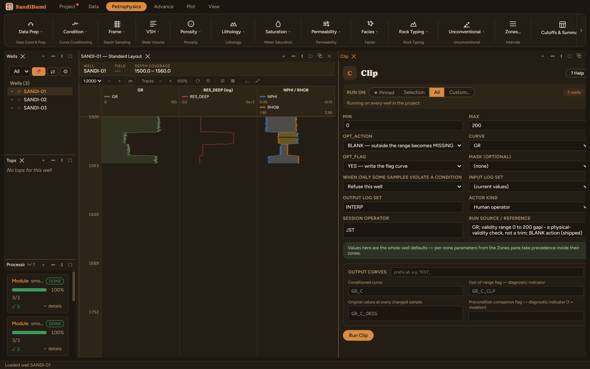
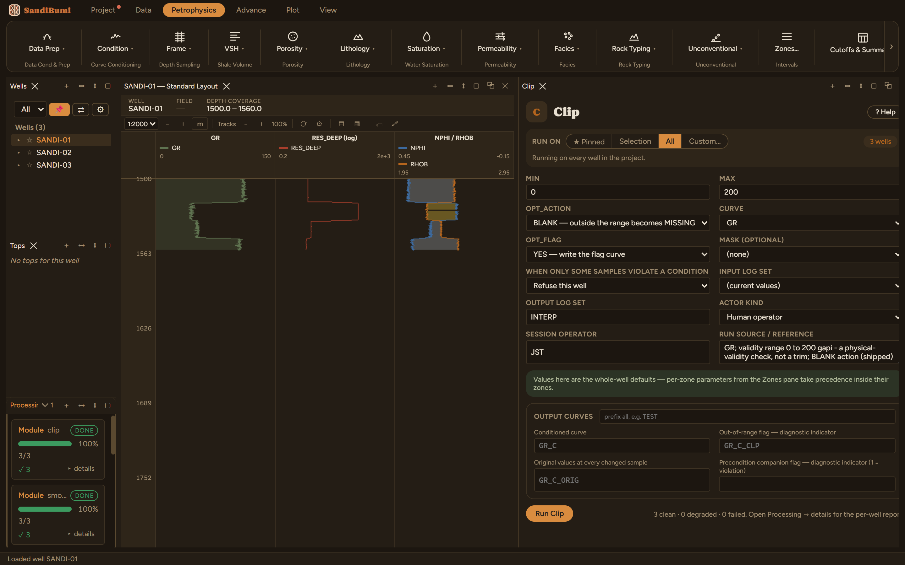

Clip
Holds a curve inside a declared range. An empty bound is a statement that the curve is unbounded on that side, not an omission.
BLANK: x outside [MIN, MAX] → MISSING CLAMP: x → min(max(x, MIN), MAX)
What this is and when to reach for it
Clip holds a curve inside a stated range. Its proper job is physical validity: a resistivity of 106 ohmm is not a very resistive rock, it is a reading the tool could not make, and a porosity of 1.4 v/v is not porosity. Reach for Clip to convert those impossibilities into honest MISSING values before they pollute a regression or an average.
The physics
There is none, and that is the point to hold onto: Clip knows nothing about rock, only about the range you state. The two actions differ in what they claim afterwards:
- BLANK (shipped): a sample outside the range becomes MISSING. The right answer when the range is a validity check, because pinning an impossible reading to the bound would leave a real-looking number where there is no measurement.
- CLAMP: a sample outside the range is pulled to the bound. Only defensible for a small arithmetic overshoot, a porosity of 1.02 from a subtraction, where the value is nearly right and the bound is the physics.
MIN and MAX may each be left empty, which is a statement that the curve is unbounded on that side, not an omission.
The picks and why
- MIN 0, MAX 200 gAPI on the gamma ray: a validity range, outside anything this section can read. Run live: 0 samples blanked, and zero is the good outcome, the check confirming the delivery is physically sensible.
- What changes when the bound moves inside the data, run live: MAX 110 gAPI blanks 184 of 1185 samples, 16 percent of the section, all of it real shale (this gamma ray runs 40.2 to 115.6 gAPI). A clip bound is a statement about what is physically impossible; the moment it moves inside the observed distribution it stops being QC and starts deleting rock.
Step by step
- Open Petrophysics ▸ Condition ▸ Clip.
- State the validity range in the curve's own units, leaving a side empty if it is genuinely unbounded.
- Keep BLANK for validity work; choose CLAMP only for arithmetic overshoot.
- Fill the custody line and press Run Clip.

Reading the result
3 clean, 0 blanked: the whole log sits inside physical validity. The flag curve exists anyway, all zeros, which is itself the record that the check ran. Count in the Database Inspector:
SELECT COUNT(*) FILTER (WHERE value = 1) FROM computed_curves WHERE curve_name = 'GR_C_CLP'

QC and pitfalls
- Before setting a bound, look at the curve's histogram. A bound inside the observed distribution deletes rock, and it deletes it silently on every re-run.
- Do not use Clip to remove washout effects: bad hole is flagged and masked (the Bad-Hole chapter), because the samples there are wrong for a reason worth recording, not out of range.
- Blanked samples propagate as MISSING into everything downstream, which is the honest behaviour, but count them first: a validity range that blanks a fifth of the well is a delivery problem to raise, not a conditioning step to keep.
What the application enforces
Everything below is generated from the same manifest the application builds this module’s pane from — descriptions, defaults, sources, ranges and pre-run checks here are exactly what the running application enforces.
Holds a curve inside a range. MIN and MAX are in the curve's own units and either may be left EMPTY, which is a statement that the curve is unbounded on that side rather than an omission. ACTION: • BLANK — a sample outside the range becomes MISSING. The right answer when the range is a validity check: a resistivity of 1e6 is not a very resistive rock, it is a reading the tool could not make, and pinning it to the bound would leave a real number where there is no measurement. • CLAMP — a sample outside the range is pulled to the bound. Only defensible when the excursion is a small arithmetic overshoot of a known physical limit, the way PHIE is floored at 0.001 rather than blanked. BLANK is the default because it is the one that cannot manufacture a measurement.
Input curves
| Role | Description | Resolves to | Required | Notes |
|---|---|---|---|---|
| CURVE | Curve to clip | GR | yes | — |
Parameters
Whole-well defaults; per-zone values from the Zones pane take precedence inside their zones (except where a parameter is marked one-value-per-well).
MIN
Lowest honest value — blank for no lower bound
- No shipped default. You supply this value, and a run entering it explicitly must also cite the source that covers it.
- Accepted range: -1000000000 to 1000000000
MAX
Highest honest value — blank for no upper bound
- No shipped default. You supply this value, and a run entering it explicitly must also cite the source that covers it.
- Accepted range: -1000000000 to 1000000000
Options
OPT_ACTION
What happens to a sample outside the range
- Choices:
BLANK— outside the range becomes MISSINGCLAMP— outside the range is pulled to the bound
- Default:
BLANK
OPT_FLAG
Write a flag curve marking every sample outside the range
- Choices:
YES— write the flag curveNO— the conditioned curve only
- Default:
YES
Output curves
| Name | Description |
|---|---|
| OUT_CURVE | Conditioned curve |
| OUT_FLAG | Out-of-range flag (flag: DIAGNOSTIC_INDICATOR) |
| OUT_ORIG | Original values at every changed sample |